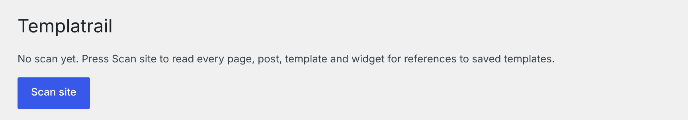
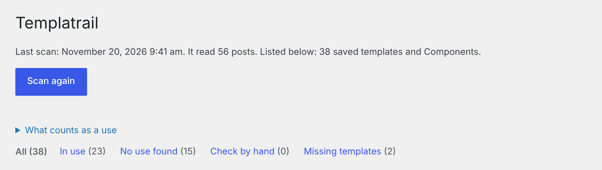
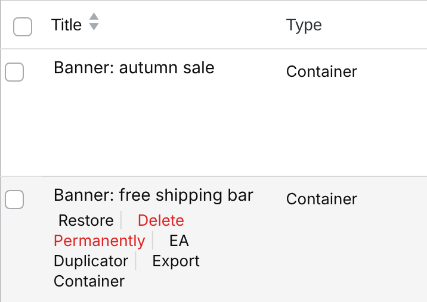
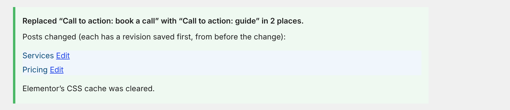

Templatrail quick start
Installing Templatrail, the first scan, clearing out templates, and what Templatrail Pro adds. Back to the Templatrail product page.
Install
Requires WordPress 6.8 or later, PHP 7.4 or later, and Elementor active.
- Get the files. The free plugin is templatrail.zip (version 1.0.2) from this site; it is not on WordPress.org yet. Pro buyers also get
templatrail-pro.zip(version 1.0.2) from Polar, through the link in the order email. Do not unzip either. - In WordPress, go to Plugins > Add Plugin, click Upload Plugin, choose
templatrail.zip, then Install Now and Activate Plugin. The Plugins screen then says where it lives, with an Open Templatrail link.

- Pro only: do the same with
templatrail-pro.zip. It carries the free plugin inside. If Templatrail is not active yet (you bought only Pro, or activated Pro first), the Plugins screen shows a notice with the button Install and activate Templatrail, which installs it from the zip inside Pro. If the free plugin is switched off later, Pro shows the same notice with Activate Templatrail.

Scan the site
Go to Tools > Templatrail and press Scan site. A progress bar shows it working through your posts in batches. When it ends, the page shows the date of the scan and the report; Scan again starts over.

Read the report
The tabs are All, In use, No use found, Check by hand and Missing templates. Each row is a saved template or Component with its type, status and number of places. Click the number of places (for example 5 places) to open the list: each page, post or template that uses it, how, and an Edit with Elementor link. A template's name opens its own screen, with the same places in a table.

- In use: at least one place uses it.
- No use found: no use was found in the places Templatrail reads.
- Check by hand: Templatrail could not tell, and shows why.
To see the count in Elementor's own list, open Elementor > Editor, then Templates > Saved Templates in Elementor's side menu: the list has a Used on column. Click a count there to open that template's own screen: the same places in a table, and with Pro, Replace everywhere.
Clear out templates
- Open the No use found tab and tick the templates to clear out. Read each row first, and the line above the button: a template placed from a PHP theme file, a menu or another plugin’s own tables shows as No use found, because Templatrail cannot see it.
- Press Move selected to Trash. Templatrail reads the site again for them, leaves out any that gained a use, and moves the rest to WordPress's Trash. The result names what moved and what was left alone, and why.
- To restore, use the Open Elementor’s Trash view to restore templates link in the result, or the Trash link above the Saved Templates list; point at a template and choose Restore.

WordPress empties its Trash after 30 days by default. If your site has the Trash switched off, Move selected to Trash is greyed out and says why.
Missing templates
The Missing templates tab lists pages, posts and templates that still point, by ID, at a template that was deleted or is in the Trash. A button opens the page for editing (Edit with Elementor, or Edit when the reference is in the page's content); for a template in the Trash, Restore the template brings it back.

Templatrail Pro
- Replace everywhere. Open the template's own screen (its count under Used on in Saved Templates), press Replace everywhere, choose a template of the same kind under Replace with, press Preview the change, and read This will change and the list of places. Press Replace everywhere again to confirm. Each changed post gets a revision first, Elementor's CSS cache is cleared, and a summary lists what changed and what failed.
- Export CSV. Beside Scan site on Tools > Templatrail: the report of the last scan, one row per place that uses a template, plus the templates with no use found, those to check by hand, and the references to missing templates.

Updating Pro. Pro makes no network call, so WordPress shows no update for it. Sign in to Polar's customer portal with the email address you bought with, download the new templatrail-pro.zip, then go to Plugins > Add Plugin > Upload Plugin, choose it, press Install Now and then Replace current with uploaded. Pro stays active.
Deactivate or delete
Deactivating stops Templatrail and keeps its scan results. Deleting it removes its two tables and its settings from your database; your templates and pages are not touched.
Limits
No use found means no use was found in the places Templatrail reads; what it does not read is listed on the product page. Templatrail changes no post other than the templates you move to the Trash: Components are never offered, and nothing is deleted for good. Pro replaces shortcodes and widget settings only; the other uses are listed, not replaced. Tested on Linux with WordPress 7.1.5 and 6.8.3, PHP 8.3 and 7.4 and Elementor 4.4.1 (how we tested); Elementor Pro itself, a Windows or macOS web server, and browsers other than Chrome were not part of the tests.
Privacy
Neither plugin contacts any server: no telemetry, no analytics, no license check, no update check of its own. Scan results are stored in your site's own database.
Support
Email support@ochrestack.com with your WordPress, PHP and Elementor versions and what the screen showed.